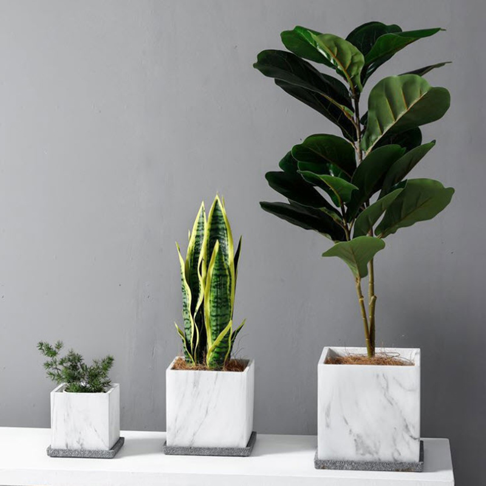

ปัญหาที่ต้องการแก้ไข
ปัญหาหลักที่โปรเจคนี้ต้องการแก้ไขคือการขาดการดูแลต้นไม้ที่ถูกต้องและเหมาะสมเนื่องจากคนส่วนใหญ่ไม่สามารถรู้ได้แน่ชัดว่าต้นไม้ต้องการน้ำมากหรือน้อยแค่ไหนในแต่ละช่วงเวลา
ซึ่งการรดน้ำมากเกินไปหรือน้อยเกินไปอาจส่งผลให้ต้นไม้ตายหรือเติบโตไม่เต็มที่ นอกจากนี้ยังมีปัญหาการดูแลต้นไม้ในกรณีที่ผู้ปลูกไม่อยู่บ้านหรือไม่มีเวลาพอในการตรวจสอบสภาพของดินและต้นไม้อย่างสม่ำเสมอ
